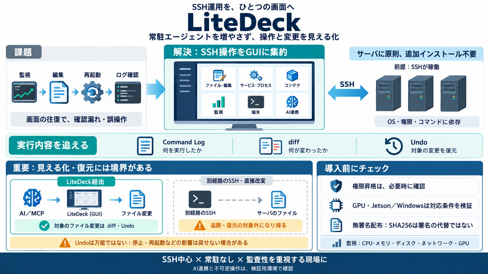

Model Context Protocol (MCP): Specification, Security & Enterprise (2026)
> The MCP Security Reality: MCP introduces security risks including prompt injection, tool poisoning, credential misuse,…

> The MCP Security Reality: MCP introduces security risks including prompt injection, tool poisoning, credential misuse,…
The Model Context Protocol (MCP) gives AI agents the ability to call real tools: querying databases, writing files, call…
What it cannot see or undo. Only work that went through LiteDeck is in the graph — not what an AI did over SSH by itself…
Both tools share a critical limitation: they analyze code at rest. They cannot detect runtime behavior — a server that b…
This makes the dependency visible in the tool contract and allows any compatible server instance to process the request.…